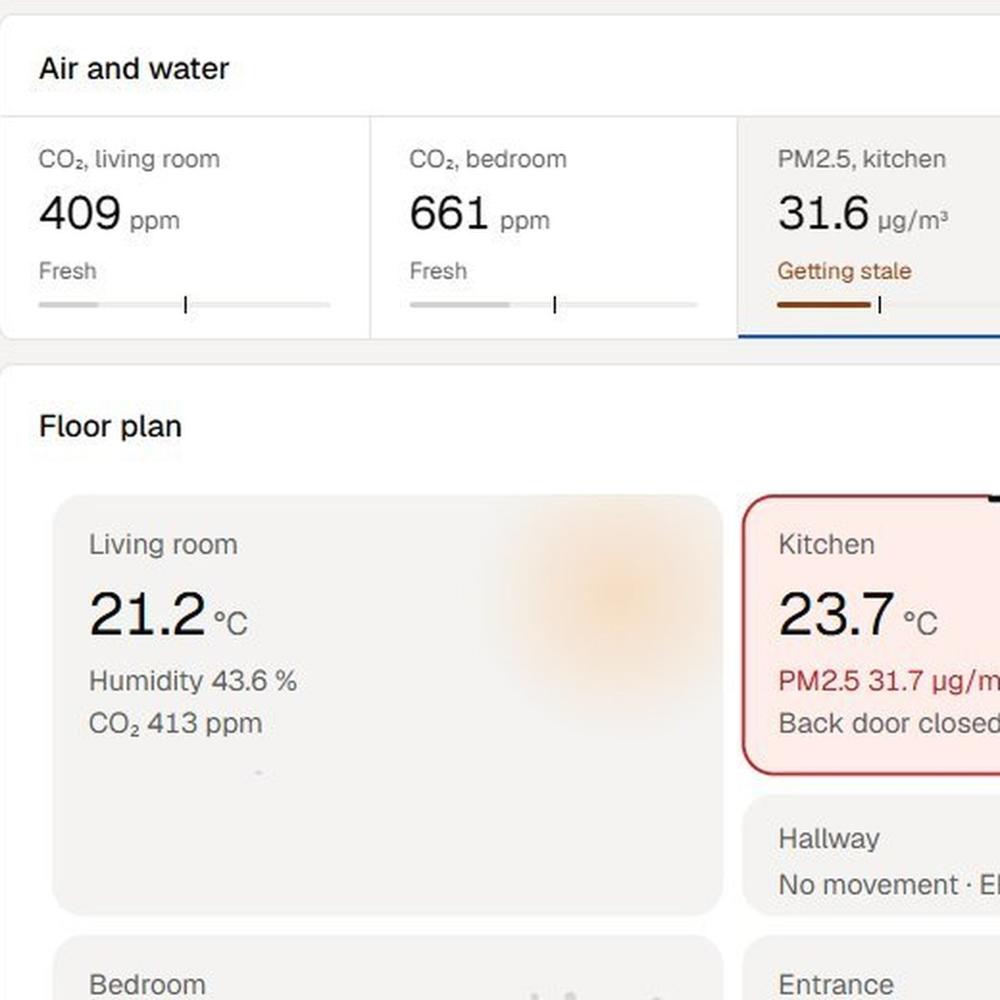
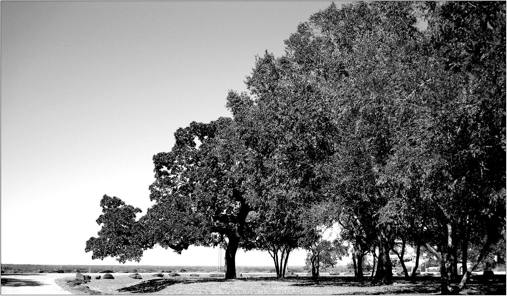

Air
- Carbon dioxide in the living room and bedroom
- PM2.5 dust from cooking
- VOCs from paint and cleaning sprays
- Ventilation that runs until the last alert clears
- Limits from WHO and EPA guidance
Hearth is a local-first smart home. Seventeen sensors watch the air, the water and the light in every room, and the house quietly acts on what they find.
Open the live homeMost smart homes are switches you reach from a phone. Hearth is the other half: it notices. When the bedroom air goes stale at three in the morning, it opens the ventilation before anyone wakes with a headache.
Everything runs inside the house. Readings travel over MQTT to a small server on the local network, so the lights, the air and the leak alarms keep working when the internet does not.
Every sensor also appears in Home Assistant on its own, grouped by room, so a household can add its own routines on top.
The rules are plain and written down. Nothing is guessed, and nothing happens that the house cannot explain. Read one evening of them.

Carbon dioxide in the living room and bedroom, fine dust from the kitchen, and chemical fumes from cleaning sprays. Each reading says whether it is fresh, getting stale or over its limit.
These are the real rules Hearth runs, played through one ordinary evening. A limit has to hold for a while before anything moves, and it has to clear properly before anything stops, so nothing flickers.
Clean air all night, no switch touched3 rules

Each sensor announces itself to Home Assistant, so adding a routine is a few lines.
automation:
- alias: Bedroom air at night
trigger:
- platform: numeric_state
entity_id: sensor.hearth_co2_bedroom
above: 1000
action:
- service: switch.turn_on
target:
entity_id: switch.hearth_erv_mainThe live home runs the same rules in your browser. Cook dinner, invite friends, spill some water, and see what Hearth does.
Open the live home